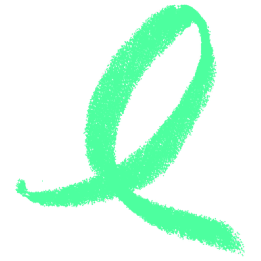

<!doctype html>
<html lang="en">
<head>
<meta charset="utf-8">
<title>ObjectExplorer promo</title>
<link rel="stylesheet" href="./promo.css">
</head>
<body>
<div id="stage">
	<div id="layers"></div>
	<div class="shade"></div>
	<div class="caption" id="caption"></div>
	<div id="flash"></div>
	<div id="grid"></div>
</div>
<script>
// The promotion film, as one function of time. Nothing animates on its own: the recorder in
// scripts/promo.mjs sets the clock frame by frame and screenshots each one, so a slow machine
// cannot drop a frame and the film is the same every time it is built.
//
// Open it with ?t=12.5 to look at one second of it, or ?grid=1 to check the crop boxes over the
// squirrel comic. The comic is promo/oe@4x.jpg, made by scripts/promo-comic.py: assets/oe.png
// upscaled four times by Real-ESRGAN and rebranded green, because a single panel of the original
// is only ~340px wide and the film shows it ~900px tall on a 1080p frame.
//
// The page is laid out at 1280x720 and recorded at a device scale of 1.5, so the film is 1080p
// with text drawn at that size and every picture sampled from its own full resolution.

const COMIC = "./oe@4x.jpg"

// A panel of the comic, as fractions of the whole picture, so the numbers survive a re-export at
// another size. Row 1 is panels 1-5, row 2 is 6-10, row 3 is 11 and the wide 12, row 4 is the
// end card with the wordmark.
// The numbers come from the white gutters in the picture itself, measured once: the horizontal
// ones sit at y 283, 530 and 768 of 1024, and each row has its own column gutters.
const panels = {
	found:    { x: 0.0310, y: 0.0040, w: 0.1940, h: 0.2680 },
	nut:      { x: 0.2577, y: 0.0040, w: 0.1731, h: 0.2680 },
	open:     { x: 0.4625, y: 0.0040, w: 0.1627, h: 0.2680 },
	hammer:   { x: 0.6582, y: 0.0040, w: 0.1740, h: 0.2680 },
	driver:   { x: 0.8599, y: 0.0040, w: 0.1383, h: 0.2680 },
	wrench:   { x: 0.0276, y: 0.2823, w: 0.1714, h: 0.2313 },
	pliers:   { x: 0.2340, y: 0.2823, w: 0.1844, h: 0.2313 },
	drill:    { x: 0.4490, y: 0.2823, w: 0.1592, h: 0.2313 },
	torch:    { x: 0.6407, y: 0.2823, w: 0.1697, h: 0.2313 },
	giveUp:   { x: 0.8406, y: 0.2823, w: 0.1575, h: 0.2313 },
	idea:     { x: 0.0267, y: 0.5235, w: 0.1653, h: 0.2226 },
	inside:   { x: 0.2130, y: 0.5330, w: 0.7830, h: 0.2050 },
	// the squirrel alone from the end card, clear of its panel number, for the film's own end card
	mascot:   { x: 0.0280, y: 0.7830, w: 0.1780, h: 0.2130 },
}

// One entry per cut. `at` is when it starts, `hold` how long it is on screen, `crop` a panel of
// the comic or nothing at all for a screenshot, `zoom` how much it pushes in while it plays, and
// `anchor` which part of a filled panel survives the crop — 0 keeps its top, 0.5 its middle.
// `card` is the end card, drawn by the page rather than cut from a picture.
const SHOT = "../docs/public/screenshot/"
const scenes = [
	{ at: 0.0,  hold: 2.4, src: COMIC, crop: panels.found,   zoom: 1.10, lines: [] },
	{ at: 2.4,  hold: 1.3, src: COMIC, crop: panels.hammer,  zoom: 1.12, lines: [] },
	{ at: 3.7,  hold: 1.1, src: COMIC, crop: panels.pliers,  zoom: 1.12, lines: [] },
	{ at: 4.8,  hold: 1.1, src: COMIC, crop: panels.drill,   zoom: 1.12, lines: [] },
	{ at: 5.9,  hold: 1.1, src: COMIC, crop: panels.torch,   zoom: 1.12, lines: [] },
	{ at: 7.0,  hold: 1.8, src: COMIC, crop: panels.giveUp,  zoom: 1.10, lines: [] },
	{ at: 8.8,  hold: 2.2, src: COMIC, crop: panels.idea, anchor: 0.18, zoom: 1.10, lines: [] },
	{ at: 11.0, hold: 3.2, src: SHOT + "hero.png",                zoom: 1.08, lines: ["One window.", "S3, GCS, Azure, OneLake, local."], small: 1 },
	{ at: 14.2, hold: 2.8, src: SHOT + "column-summary.png",      zoom: 1.10, lines: ["See the shape", "before you read a row."] },
	{ at: 17.0, hold: 2.8, src: SHOT + "notebook-chart.png",      zoom: 1.08, lines: ["SQL and a chart,", "where the data lives."] },
	{ at: 19.8, hold: 2.8, src: SHOT + "story-big-file.png",      zoom: 1.08, lines: ["A 2 GB file?", "Just scroll it."] },
	{ at: 22.6, hold: 2.8, src: SHOT + "story-cad-cloud.png",     zoom: 1.08, lines: ["CAD, straight", "from the bucket."] },
	{ at: 25.4, hold: 2.8, src: SHOT + "format-model.png",        zoom: 1.08, lines: ["Models, textures", "and shaders, drawn."] },
	{ at: 28.2, hold: 2.8, src: SHOT + "lake-metadata.png",       zoom: 1.08, lines: ["Delta, Iceberg, Hudi —", "just tables."] },
	{ at: 31.0, hold: 2.8, src: SHOT + "story-agent-observe.png", zoom: 1.08, lines: ["Watch an agent", "read your data."] },
	{ at: 33.8, hold: 2.8, src: SHOT + "story-agent-replay.png",  zoom: 1.08, lines: ["Then replay", "every step it took."] },
	{ at: 36.6, hold: 2.8, src: SHOT + "share.png",               zoom: 1.08, lines: ["Share it masked,", "hashed, and expiring."] },
	{ at: 39.4, hold: 2.6, src: COMIC, crop: panels.inside, wide: true, zoom: 1.08, lines: [] },
	{ at: 42.0, hold: 4.5, card: true, lines: [], end: true },
]

// the cut into the product half gets one white blink, so the two halves are told apart
const PRODUCT_AT = scenes.find((scene) => !scene.crop && !scene.card).at

const DURATION = scenes.at(-1).at + scenes.at(-1).hold
const stage = { width: 1280, height: 720 }
const layers = document.getElementById("layers")
const caption = document.getElementById("caption")
const flash = document.getElementById("flash")
const shade = document.querySelector(".shade")

// one layer per scene, all built once so a frame is only a matter of setting styles. The frame
// inside it is the crop window: without it a fitted panel would show the panels around it, since
// they are all one picture.
const built = scenes.map((scene) => (scene.card ? buildCard(scene) : buildPicture(scene)))

function buildPicture(scene) {
	const layer = document.createElement("div")
	layer.className = "layer"
	const backdrop = document.createElement("div")
	backdrop.className = "backdrop"
	const backdropImage = document.createElement("img")
	backdropImage.src = scene.src
	backdrop.appendChild(backdropImage)
	layer.appendChild(backdrop)
	const frame = document.createElement("div")
	frame.className = "frame"
	const image = document.createElement("img")
	image.src = scene.src
	frame.appendChild(image)
	layer.appendChild(frame)
	layers.appendChild(layer)
	return { scene, layer, frame, image, backdropImage }
}

function buildCard(scene) {
	const layer = document.createElement("div")
	layer.className = "layer"
	layer.innerHTML = `
		<div class="card">
			<div class="card-mascot"></div>
			<div class="card-brand">
				<div class="card-name"><span>Object<em>Explorer</em></span></div>
				<div class="card-tagline">Open anything. Explore everything.</div>
				<div class="card-url">objectexplorer.com</div>
			</div>
		</div>`
	layers.appendChild(layer)
	const mascot = layer.querySelector(".card-mascot")
	return { scene, layer, mascot, image: mascot.querySelector("img"), mark: layer.querySelector(".card-name img") }
}

// the squirrel fills its frame, cropped from the comic the way a panel is
function placeMascot(entry, scale) {
	const image = entry.image
	const crop = panels.mascot
	const frameWidth = 500
	const frameHeight = 400
	const cover = Math.max(frameWidth / (image.naturalWidth * crop.w), frameHeight / (image.naturalHeight * crop.h)) * scale
	const width = image.naturalWidth * cover
	const height = image.naturalHeight * cover
	image.style.width = `${width}px`
	image.style.height = `${height}px`
	image.style.left = `${-crop.x * width - (image.naturalWidth * crop.w * cover - frameWidth) / 2}px`
	image.style.top = `${-crop.y * height - (image.naturalHeight * crop.h * cover - frameHeight) / 2}px`
}

function easeOut(fraction) {
	return 1 - Math.pow(1 - fraction, 3)
}

// everything is shown whole now — a comic panel filling a 1280x720 frame was a four-times blow-up
// of a 340px picture. The blurred backdrop behind it is what fills the frame instead.
function fitsInside(scene) {
	return true
}

// the crop, in stage pixels: the frame is the cropped part, centred on the stage, and the picture
// inside it is pulled up and left so that part is what shows through
function fill(image, scene) {
	const naturalWidth = image.naturalWidth || 1
	const naturalHeight = image.naturalHeight || 1
	const crop = scene.crop ?? { x: 0, y: 0, w: 1, h: 1 }
	const cover = Math.max(stage.width / (naturalWidth * crop.w), stage.height / (naturalHeight * crop.h))
	const width = naturalWidth * cover
	const height = naturalHeight * cover
	image.style.width = `${width}px`
	image.style.height = `${height}px`
	image.style.left = `${-crop.x * width + (stage.width - naturalWidth * crop.w * cover) / 2}px`
	image.style.top = `${-crop.y * height + (stage.height - naturalHeight * crop.h * cover) / 2}px`
}

function place(frame, image, scene, scale) {
	const naturalWidth = image.naturalWidth || 1
	const naturalHeight = image.naturalHeight || 1
	const crop = scene.crop ?? { x: 0, y: 0, w: 1, h: 1 }
	const cropWidth = naturalWidth * crop.w
	const cropHeight = naturalHeight * crop.h
	// a comic panel fills the frame; a screenshot, and the two wide banner panels, are fitted
	// inside it, because what a crop would cut off is what the caption is talking about
	const fit = fitsInside(scene) ? Math.min(stage.width / cropWidth, stage.height / cropHeight)
		: Math.max(stage.width / cropWidth, stage.height / cropHeight)
	// a fitted picture is held a little above centre, so the caption band under it lands on
	// empty ground rather than over what is being pointed at
	const inset = scene.crop ? (scene.wide ? 0.94 : 0.82) : 0.86
	const lift = scene.crop ? (scene.wide ? 34 : 44) : 48
	const fill = fit * inset * scale
	const width = naturalWidth * fill
	const height = naturalHeight * fill
	frame.style.width = `${cropWidth * fill}px`
	frame.style.height = `${cropHeight * fill}px`
	frame.style.left = `${(stage.width - cropWidth * fill) / 2}px`
	frame.style.top = `${(stage.height - cropHeight * fill) * (scene.anchor ?? 0.5) - lift}px`
	image.style.width = `${width}px`
	image.style.height = `${height}px`
	image.style.left = `${-crop.x * width}px`
	image.style.top = `${-crop.y * height}px`
}

function renderFrame(time) {
	const at = Math.max(0, Math.min(time, DURATION))
	let current = built[0]
	for (const entry of built) {
		const { scene, layer, image } = entry
		const local = at - scene.at
		const inScene = local >= 0 && local < scene.hold
		if (inScene) {
			current = entry
			// a 0.35s cross-fade in, and out only at the very end
			const fadeIn = Math.min(1, local / 0.35)
			const fadeOut = scene.end ? Math.min(1, (scene.hold - local) / 0.8) : 1
			layer.style.opacity = String(Math.min(fadeIn, fadeOut))
			// a panel pushes in, a screenshot pulls back — so the app ends whole on screen
			const through = local / scene.hold
			if (scene.card) {
				placeMascot(entry, 1 + 0.06 * through)
			}
			else {
				const scale = scene.crop ? 1 + (scene.zoom - 1) * through : scene.zoom - (scene.zoom - 1) * through
				place(entry.frame, image, scene, scale)
				fill(entry.backdropImage, scene)
			}
		}
		else {
			layer.style.opacity = "0"
		}
	}
	drawCaption(current.scene, at - current.scene.at)
	shade.style.opacity = current.scene.lines.length ? "1" : "0"
	const blink = at - PRODUCT_AT
	flash.style.opacity = blink >= 0 && blink < 0.22 ? String(0.8 * (1 - blink / 0.22)) : "0"
}

function drawCaption(scene, local) {
	if (caption.dataset.at !== String(scene.at)) {
		caption.dataset.at = String(scene.at)
		caption.innerHTML = scene.lines
			.map((line, index) => `<div class="line ${scene.small === index ? "small" : ""}">${line}</div>`)
			.join("")
	}
	const lines = [...caption.children]
	lines.forEach((line, index) => {
		const start = 0.18 + index * 0.16
		const fraction = Math.max(0, Math.min(1, (local - start) / 0.5))
		const eased = easeOut(fraction)
		const leaving = scene.hold - local < 0.3 ? (scene.hold - local) / 0.3 : 1
		line.style.opacity = String(eased * Math.max(0, leaving))
		line.style.transform = `translateY(${(1 - eased) * 26}px)`
	})
}

// ?grid=1 draws the crop boxes over the whole comic, which is how the fractions above were checked
function drawGrid() {
	const image = document.createElement("img")
	image.src = COMIC
	image.style.width = `${stage.width}px`
	image.style.position = "absolute"
	const grid = document.getElementById("grid")
	grid.style.display = "block"
	grid.appendChild(image)
	image.onload = () => {
		const height = stage.width * image.naturalHeight / image.naturalWidth
		for (const [name, crop] of Object.entries(panels)) {
			const box = document.createElement("div")
			box.style.left = `${crop.x * stage.width}px`
			box.style.top = `${crop.y * height}px`
			box.style.width = `${crop.w * stage.width}px`
			box.style.height = `${crop.h * height}px`
			box.textContent = name
			grid.appendChild(box)
		}
	}
}

const params = new URLSearchParams(location.search)
window.promoDuration = DURATION
window.promoScenes = scenes.map((scene) => scene.at)
window.renderFrame = renderFrame
window.drawGrid = drawGrid
if (params.has("grid")) {
	drawGrid()
}
else {
	// every picture has to be decoded before the first frame is asked for, or a cut lands on an
	// empty box
	const pictures = built.flatMap((entry) => (entry.mark ? [entry.image, entry.mark] : [entry.image]))
	window.promoReady = Promise.all(pictures.map((picture) => picture.decode().catch(() => null)))
		.then(() => renderFrame(Number(params.get("t") ?? 0)))
}
</script>
</body>
</html>
